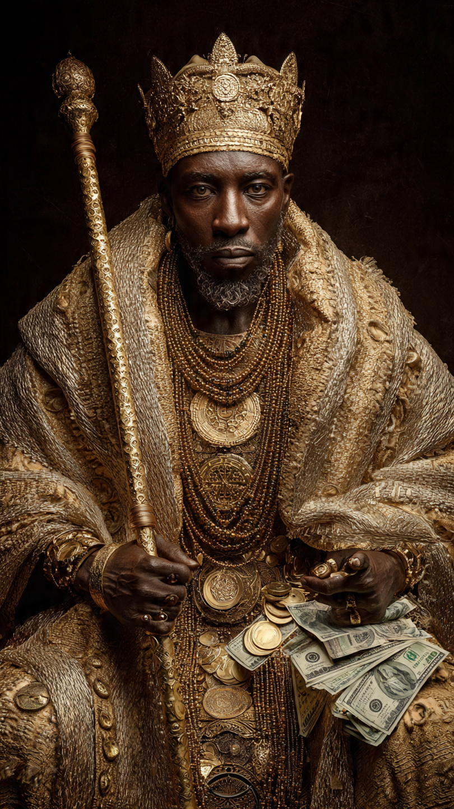
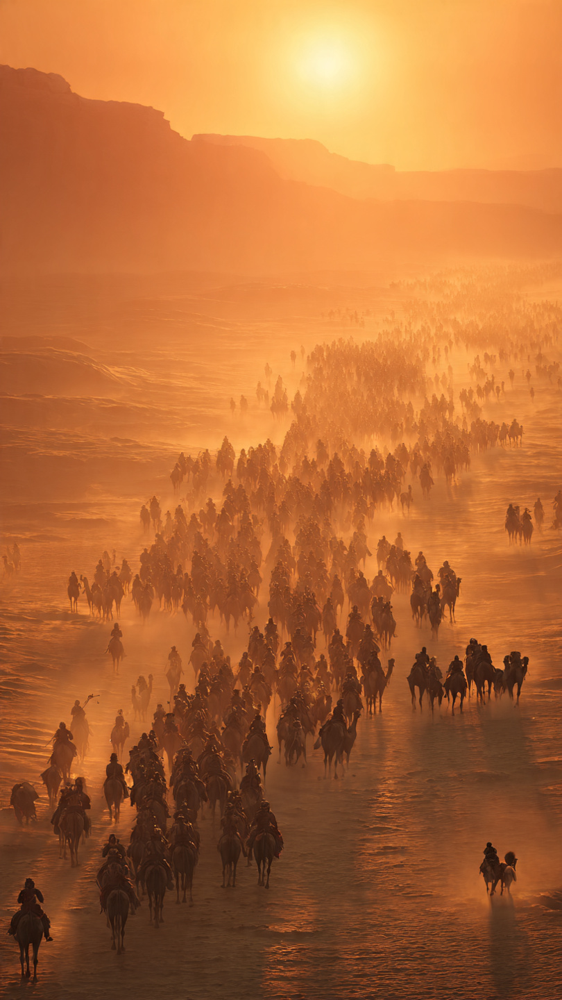

```html id="m4v1zc"
الرجل الذي كان أغنى من أي ملياردير في التاريخ | قصص تاريخية
```
قبل أكثر من سبعمائة عام، كانت في غرب إفريقيا إمبراطورية تُعد من أغنى إمبراطوريات العالم.
امتدت أراضيها عبر مساحات شاسعة، وسيطرت على أهم طرق التجارة في الصحراء الكبرى.
وكان يحكمها رجل أصبح اسمه مرادفًا للثروة حتى يومنا هذا.
إنه مانسا موسى، إمبراطور مالي.
ولد مانسا موسى في أسرة حاكمة، وتولى حكم إمبراطورية مالي في أوائل القرن الرابع عشر.
وفي ذلك الوقت، كانت مالي تمتلك مناجم هائلة من الذهب، إضافة إلى تجارة الملح والعاج وغيرها من السلع الثمينة.
وكان الذهب المستخرج من أراضيها يُصدَّر إلى مناطق واسعة من إفريقيا والشرق الأوسط وأوروبا.
ولهذا أصبحت الإمبراطورية واحدة من أغنى دول عصرها.
لكن ثروة مانسا موسى لم تكن مجرد أموال يحتفظ بها في خزائنه.
فقد كان يسيطر على موارد طبيعية هائلة، ومدن تجارية مزدهرة، وقوافل تعبر الصحراء محملة بالبضائع الثمينة.
ويؤكد المؤرخون أن حجم ثروته كان ضخمًا للغاية، إلا أن تقديرها بقيمة مالية حديثة أمر غير ممكن بدقة، لأن اقتصاد ذلك العصر كان مختلفًا تمامًا عن اقتصاد اليوم.
وفي عام 1324، قرر مانسا موسى القيام برحلة الحج إلى مكة.
لكنها لم تكن رحلة عادية.
بل كانت واحدة من أشهر الرحلات في التاريخ.
فقد خرج مع آلاف المرافقين، ومئات الجمال التي حملت كميات كبيرة من الذهب.
وكانت القافلة ضخمة لدرجة أن المدن التي مرت بها ظلت تتحدث عنها سنوات طويلة.
وعندما وصلت القافلة إلى القاهرة، انبهر الناس بما شاهدوه.
فقد كان الإمبراطور ينفق الذهب بسخاء، ويتصدق على الفقراء، ويشتري الهدايا والبضائع بكميات كبيرة.
حتى إن هذه الرحلة جعلت اسم إمبراطورية مالي معروفًا في أنحاء كثيرة من العالم.
لكن...
هل كان هذا الكرم سببًا في حدوث مشكلة اقتصادية غير متوقعة؟
هذا ما سنعرفه في الجزء الثاني.
📷 الصورة رقم 1

عندما دخلت قافلة مانسا موسى مدينة القاهرة، لم يكن أحد يتخيل أن هذه الزيارة ستُذكر في كتب التاريخ لقرون طويلة.
فقد كانت القافلة تضم آلاف المرافقين، ومئات الجمال المحملة بالذهب، إضافة إلى التجار والخدم والحراس.
وكان كل ما فيها يعكس قوة إمبراطورية مالي وثراءها الكبير.
وتذكر المصادر التاريخية أن مانسا موسى أنفق كميات كبيرة من الذهب خلال رحلته.
فقد قدّم الصدقات للفقراء، وأهدى الذهب إلى عدد من المسؤولين، واشترى بضائع ثمينة بكميات كبيرة.
ويذكر بعض المؤرخين أن كثرة الذهب التي دخلت الأسواق في ذلك الوقت أدت إلى انخفاض قيمته في القاهرة لفترة من الزمن، رغم اختلاف الباحثين في تقدير حجم هذا التأثير ومدته.
لكن الجميع يتفق على أن رحلته كانت حدثًا استثنائيًا جذب أنظار العالم إلى إمبراطورية مالي.
ولم يكن مانسا موسى يهتم بإظهار ثروته فقط.
فعند عودته إلى بلاده، دعا العلماء والمهندسين والمعماريين من أنحاء مختلفة من العالم الإسلامي.
وأمر ببناء المساجد والمدارس والمكتبات، وشجع حركة التعليم والبحث العلمي.
وخلال سنوات قليلة، أصبحت مدينة تمبكتو من أشهر مراكز العلم والتجارة في إفريقيا.
وكان الطلاب والتجار يقصدونها من مسافات بعيدة.
ومع انتشار أخبار هذه الإمبراطورية، بدأت الخرائط الأوروبية تضع اسم مالي بوضوح، بل إن بعض الخرائط القديمة رسمت مانسا موسى وهو يحمل قطعة كبيرة من الذهب في يده، في إشارة إلى الثروة الهائلة التي اشتهر بها.
وأصبح اسمه معروفًا خارج إفريقيا لأول مرة على نطاق واسع.
لكن...
هل كان مانسا موسى بالفعل أغنى إنسان في التاريخ؟
وكيف ينظر المؤرخون إلى هذا اللقب اليوم؟
هذا ما سنعرفه في الجزء الثالث والأخير.
📷 الصورة رقم 2

بعد مرور أكثر من سبعة قرون على وفاة مانسا موسى، لا يزال اسمه يتصدر قوائم أغنى الشخصيات في التاريخ.
لكن المؤرخين يوضحون أن تقدير ثروته بالأرقام الحديثة يكاد يكون مستحيلًا.
فهو لم يكن يمتلك المال فقط، بل كان يسيطر على إمبراطورية غنية جدًا بمناجم الذهب والملح، وهما من أثمن الموارد في ذلك العصر.
ولهذا، فإن المقارنات التي تقول إنه كان يمتلك مئات المليارات من الدولارات هي تقديرات حديثة وليست أرقامًا تاريخية مؤكدة.
ولم يكن إرث مانسا موسى قائمًا على الثروة وحدها.
فقد جعل من مدينة تمبكتو مركزًا عالميًا للعلم والثقافة، وشجع بناء المدارس والمكتبات والمساجد.
واجتمع فيها العلماء وطلاب العلم من مناطق مختلفة، حتى أصبحت واحدة من أشهر المدن العلمية في إفريقيا والعالم الإسلامي.
ولهذا يُذكر مانسا موسى أيضًا بوصفه راعيًا للعلم والعمران، وليس مجرد حاكم ثري.
أما رحلته إلى مكة، فقد بقيت من أشهر رحلات الحج في التاريخ.
فقد لفتت أنظار الممالك والتجار إلى قوة إمبراطورية مالي، وساهمت في انتشار اسمها على الخرائط الأوروبية والعربية.
ويذكر المؤرخون أن أخبار ثروته وصلت إلى مناطق بعيدة، حتى أصبح اسمه رمزًا للغنى في كثير من الروايات التاريخية.
وتُظهر قصة مانسا موسى أن الثروة الحقيقية لا تُقاس بما يملكه الإنسان من ذهب فقط، بل بما يتركه من أثر بعد رحيله.
فقد رحل الإمبراطور منذ مئات السنين، لكن اسمه لا يزال حاضرًا في كتب التاريخ، باعتباره واحدًا من أعظم حكام إفريقيا، ورمزًا لازدهار إمبراطورية مالي في القرن الرابع عشر.
👑💰 انتهت القصة 💰👑